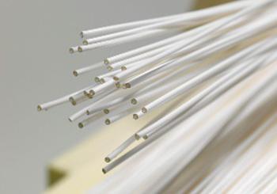
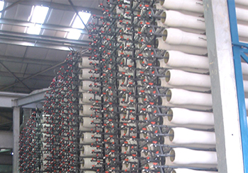
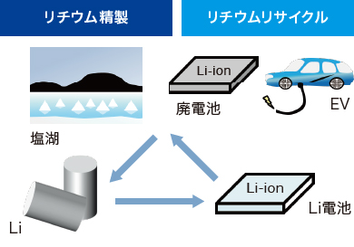
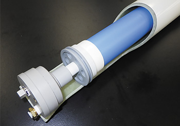

地球環境研究所
地球環境研究所は、1991年に開設された地球環境研究室を、2002年に研究所として改め設置されました。東レの有機合成技術、高分子技術、ナノ加工技術を基盤として、水処理分野の膜製品は、すべて自社開発、事業化しています。
地球環境研究所は高分子化学とナノテクノロジーを活用した高分子分離膜技術を中心に、各種水処理ニーズに対応した研究を行っています。これまでに海水淡水化などに使用される逆浸透（RO）膜をはじめ、ナノろ過（NF）膜・限外ろ過（UF）膜・精密ろ過（MF）膜など、全種類の水処理用分離膜を生み出してきました。最近では資源・エネルギー、食品・バイオなど、新領域に向けた膜の研究・技術開発にも注力しています。
※2014年度 日本化学会化学技術賞受賞
RO膜
独自の技術でサブナノメーターの精度で孔径など微細構造を制御し、世界最高レベルのホウ素除去性と高造水量を両立させました。また、RO膜の分離機能層を徹底解析し、ひだ構造と細孔、水チャネル構造を世界で初めて定量的に明らかにしました。さらに独自の精密界面重合と表面制御技術により、高透水性、高除去性、耐汚れ性を兼ね備えた高機能RO膜開発に成功しました。
UF膜、MF膜
独自の熱誘起相分離法による強靱さと精密細孔を併せ持つPVDF中空糸膜を開発し、飲料水・産業用水製造などで高い耐久性と分離性が認められています。最近では、さらなる強靱さの追求による細糸化、世界最大級の高膜面積モジュール創出にも成功しました。下廃水浄化用PVDF浸漬型平膜は、膜表面の細孔を微細にして汚泥を詰まりにくくし、細孔数を多く設けることで高透水性との両立を実現しています。
新領域分野の研究・技術開発
長年培った水処理分離膜技術をもとに新領域分野に向けた膜の研究・技術開発を推進しています。例えば、水素社会実現を見据え、水素を高効率に分離する高分子分離膜の研究、また、今後需要拡大が予想されるリチウムの回収に向けて新規NF膜の研究を行っています。

独自の熱誘起相分離法による強靭さと精密細孔を併せ持つPVDF中空糸膜

東レのRO膜エレメントを用いたアフリカ初の10万m3/d級ハンマ海水淡水化プラント（アルジェリア）
※膜エレメントは2009年度ものづくり大賞特別賞受賞
グローバルな研究・技術開発
上海の東麗先端材料研究開発（中国）有限公司の水処理研究所、Toray Industries (India) Private Limitedのインド研究拠点などと連携し、水質分析に基づく地域別顧客実証など、グローバルに研究・開発を進めています。

持続的発展可能な社会実現に向けたリチウム高選択膜の研究・技術開発

水素ガス分離用エレメントと圧力容器
研究・開発の歩み（抜粋）
| 1981 | 逆浸透膜の生産開始 |
|---|---|
| 1991 | 地球環境研究室（滋賀）を開設 |
| 1998 | PAN中空糸UF膜の生産開始 |
| 2002 | 地球環境研究所に改名 |
| 2005 | PVDF中空糸膜の生産技術確立 MBR用PVDF平膜の生産技術確立 |
| 2015 | 革新逆浸透（RO）膜を創出 |
| 2018 | 水素精製高分子分離膜を創出 |
| 2019 | 超高透水性ナノろ過（NF）膜を創出 |